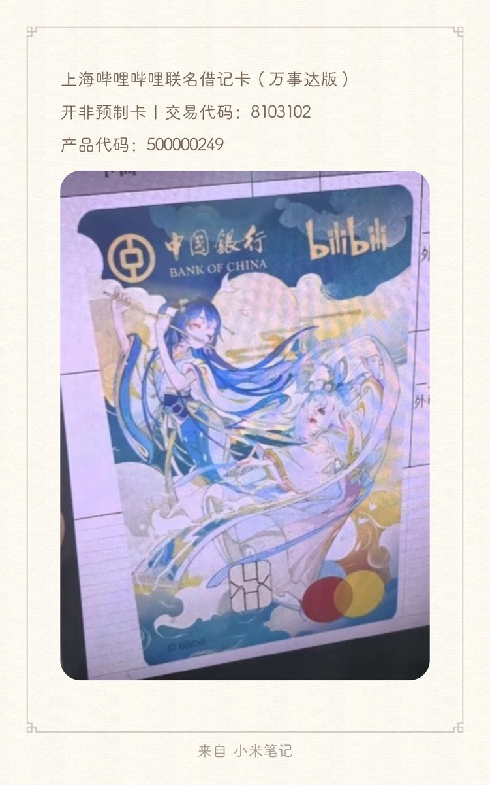

最新消息：银行刚刚给我打完电话确认了一下，目前已经开放制卡了，银行拿到的照片和这张图比有色差，实际上在“中国银行”和“bilibili” 这几个字下方的颜色是更偏绿色的，但是图案完全相同，且是万事达卡
据此推断：在我这样的小城市都可以开始制卡了，证明这张卡大概率已经在全国可以制卡了，只是没有正式通知上线而已，想成为第一批领上卡的人就快去银行问问（）
ps.桂圆小姐姐好温柔啊赫赫🥺🥺

据此推断：在我这样的小城市都可以开始制卡了，证明这张卡大概率已经在全国可以制卡了，只是没有正式通知上线而已，想成为第一批领上卡的人就快去银行问问（）
ps.桂圆小姐姐好温柔啊赫赫🥺🥺

这张卡网上宣传还没开始，但是听说有人已经拿到回执单了
我刚去完银行，桂圆打电话问了说雀食是真的会上，说给我拼拼运气看看能不能制卡，反正是没给我下非预制卡的回执单，不知道是不是真给我搞了（） https://t.co/j6yzCJXKBz
我刚去完银行，桂圆打电话问了说雀食是真的会上，说给我拼拼运气看看能不能制卡，反正是没给我下非预制卡的回执单，不知道是不是真给我搞了（） https://t.co/j6yzCJXKBz